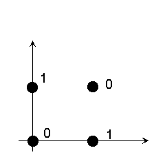

The original perceptron (Rosenblatt, 1958) was fairly sophisticated. It consists
| input layer (representing sensory units) | |
| associator units with lateral connections | |
| response units with lateral connections | |
| feedback between associator and response units. |
To make the Perceptron theoretically tractable, we consider only a single layer Perceptron.
Perceptron learning is supervised learning.
| "Training set" {fi,ti}: fi --- inputs ti ---target outputs. | |
| Feedback (from the "teacher") --- whether the mapping is correct or not (or how far off is the T's prediction from t). | |
| Aim: to learn a general mapping: T: f -> g such that T is a good fit to the training data (i.e. g is close to t), and generalizes well to novel inputs. |
Pattern classification
Example: Let f be a set of all input patterns corresponding to various fonts of a and b, such as {a, A, a, a, A, b, B, b, b, B }, we want to design a pattern classifier that can make a decision about f as to whether it means "a" or "b". Specifically we want to find a mapping T such that
T: f -> ("a", "b").
In this case T can be modeled by a perceptron with two possible output value.
Nonlinear units are typically used in perceptron. If the weight is w, and the threshold is q, then the output is given by
1, if w.f > q
0, if w.f < q
Typically, we extend the weight and input vectors such that the last component of w is -q and the last component of f is 1.
The output is then given by
1, if w.f > 0
0, if w.f < 0.
Classification using perceptron is to find a hyper-plane that can divide the inputs.
Example: a simple unit consists of two inputs
The perceptron learning is to find a right hyper-plane to separate the inputs.
XOR can not be learnt (no plane can be found to separate the inputs)
